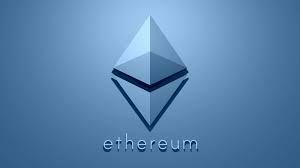
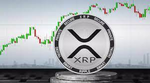

Bitcoin: The King of Crypto
Bitcoin is a digital currency, often referred to as a cryptocurrency, that was created in 2009 by
an anonymous person or group of people using the pseudonym Satoshi Nakamoto. It operates on a decentralized
network called the blockchain, which is a public ledger that records all Bitcoin transactions.
Unlike traditional currencies issued by governments, Bitcoin is not controlled by any central authority like
a bank or government. Instead, it relies on a technology called blockchain to verify and secure transactions.
The blockchain is a distributed and transparent system where multiple computers, called nodes, work together to
maintain the network and validate transactions.

Ethereum: Smart Blockchain
Ethereum is a decentralized platform and cryptocurrency that was created in 2015 by Vitalik Buterin.
It is often described as an open-source, blockchain-based platform that enables developers to build and
deploy smart contracts and decentralized applications (DApps).
While Bitcoin primarily focuses on digital currency transactions, Ethereum expands on that concept by allowing
developers to create and execute programmable contracts, known as smart contracts, on its blockchain. Smart
contracts are self-executing agreements that automatically enforce the terms and conditions written within them.

XRP: Revolutionizing Global Payments with Ripple's Digital Asset
XRP is a digital asset and cryptocurrency that was created by Ripple Labs in 2012. It operates on the Ripple
network, which is a real-time gross settlement system and currency exchange network. XRP serves as both a digital
currency and a technology protocol for facilitating fast, low-cost international money transfers.
Unlike decentralized cryptocurrencies like Bitcoin and Ethereum, XRP is considered a centralized cryptocurrency
as it is controlled by Ripple Labs. Ripple's goal is to provide a seamless and efficient way for financial institutions
to settle cross-border payments using XRP as a bridge currency.